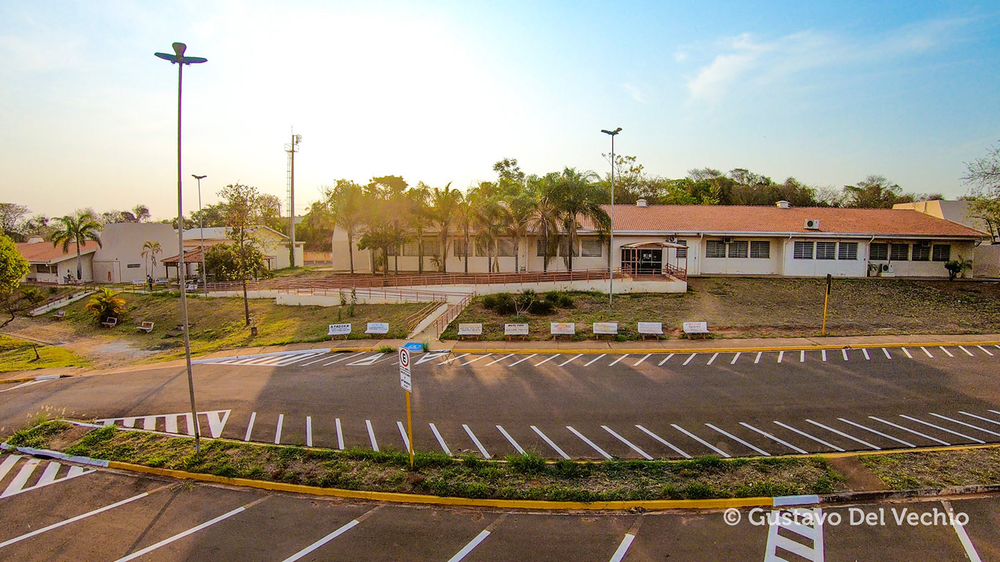
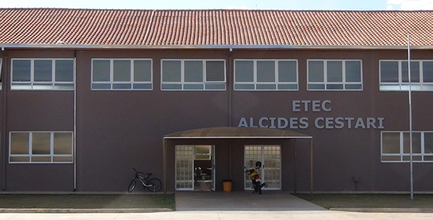
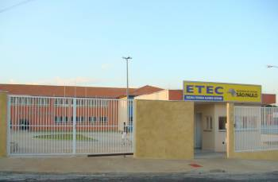
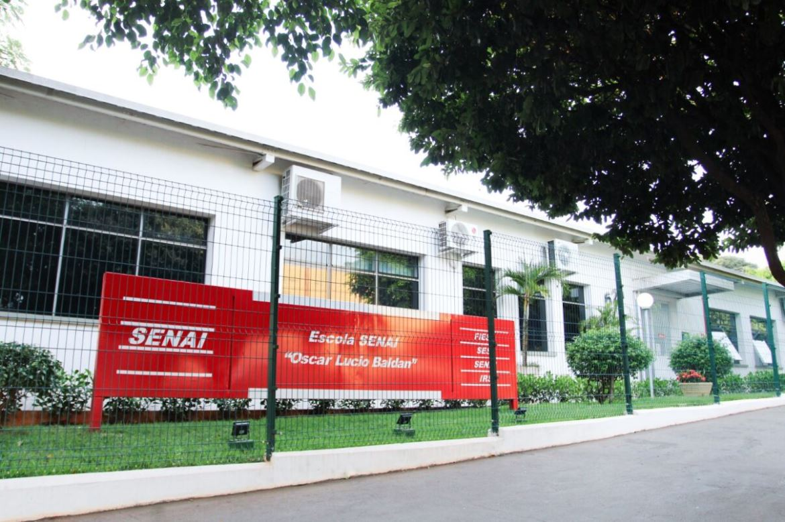
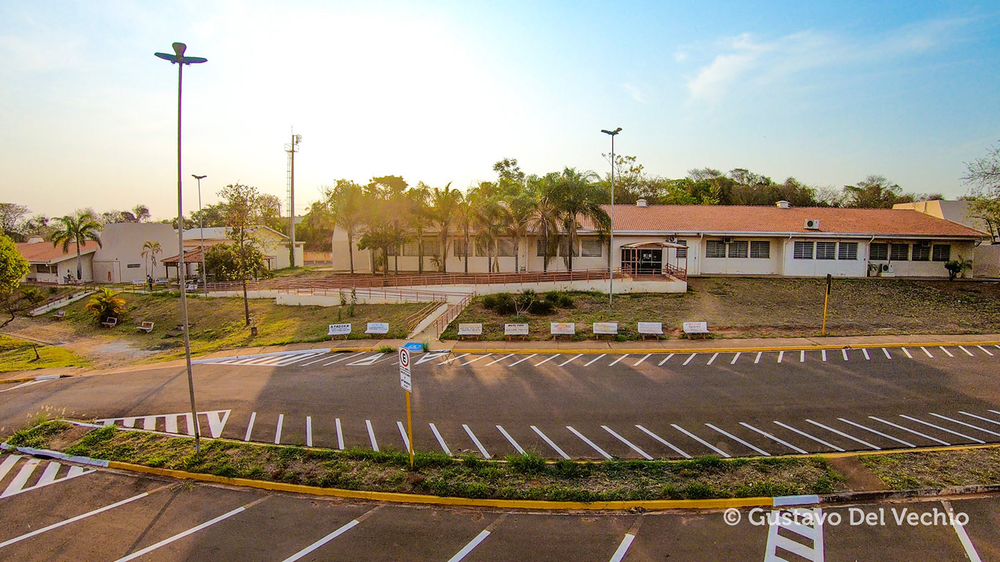
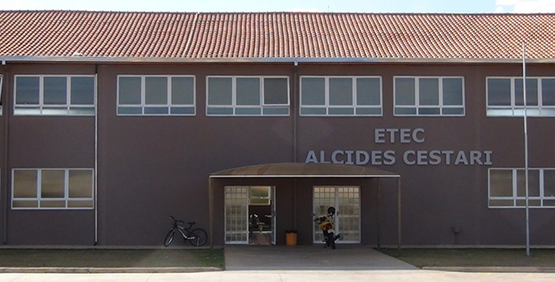
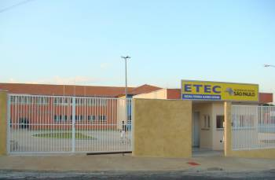
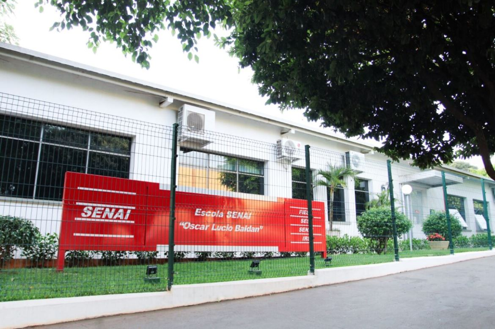

 ❮
❯
❮
❯
HTML5
CSS3
DART
JAVASCRIPT
Blender 3D
Visual Studio code 2019
Android Studio
Libresprite
Criação de telas para software mobile
Elaboração de Websites Bonitos e Agradáveis
Criação de Logomarca intuitiva
Em trabalhos de equipe e/ou em grupos eu me destaco por assumir um papel de conciliação e de liderança, sempre tentando ouvir a todos com o intuito de levar a equipe para um bom lugar
Sempre que me vem a oportunidade eu busco me qualificar, estar capacitado com os assunstos mais atuais das novas tendências é uma regra para mim, não é a toa que sempre digo "um dia sem aprender algo é um dia perdido"
Sempre procuro estar a par dos assuntos e tendências atuais, eu quero estar a par desses assuntos, mas principalmente distribuir essas informações com minha equipe
Durante o período de 2020 até fim de 2022 eu frequentei a Etec Alcides Cestari, com ensino médio integrado com Recursos Humanos, o ensino foi bom, claro que a escola tem os seus defeitos, mas foi ótimo para meu crescimento pessoal e entendimento desse mundão
Em 2022 eu ingressei em um curso técnico de Eletroeletrônica pelo Senai, em questão de aprendizado ele da 3x0 para qualquer outro curso que eu fizer, sinto falta de lá, fiz muitos amigos e amadureci bastante frequentando aquele lugar, o ensino era ótimo e aprendi a ser gente
Em 2022 eu ingressei em outro curso, só que dessa vez foi voltado para informática, frequentei no final daquele ano o curso de Informática para Internet pela Etec Dans de Taquaritinga
Minha experiencia não foi muito proveitosa, muito por que a minha régua de avaliação já vinha muito alta por causa do Senai, na época eu comecei por que meus amigos começaram, então só fui no embalo. O ensino é bem abaixo da média, os professores também não parecem bem qualificados, mas foi por lá que eu criei vontade de ingressar na carreira de Tecnologia da Informação
Em 2022 eu ingressei em outro curso, só que dessa vez foi voltado para informática, frequentei no final daquele ano o curso de Informática para Internet pela Etec Dans de Taquaritinga
Minha experiencia não foi muito proveitosa, muito por que a minha régua de avaliação já vinha muito alta por causa do Senai, na época eu comecei por que meus amigos começaram, então só fui no embalo. O ensino é bem abaixo da média, os professores também não parecem bem qualificados, mas foi por lá que eu criei vontade de ingressar na carreira de Tecnologia da Informação
Durante o ano de 2021 trabalhei como estagiário pela SILCAM
Minhas responsabilidades eram desde dar baixa em notas fiscais, acompanhar pedidos de clientes, até cuidar de exportações dos nossos pedidos para países como o Peru
Foi por meio dessa experiência que adquiri conhecimento na Lingua Espanhola
Durante o ano de 2022 eu decidi migrar para outra carreira, dessa vez como Eletricista de Manutenção Eletroeletrônica pelo Senai, foi um curso técnico remunerado, por lá que eu reconheço o meu amadurecimento como pessoa, a minha passagem por aqui foi a mais proveitosa
O curso é voltado para manutenção elétrica de grandes industrias, aprende-se desde lógica de programação para máquinas até instalação eletrica de motores elétricos
Atualmente eu trabalho na Accesys, após eu ingressar na Fatec eu consegui uma vaga como estagiário na área de desenvolvimento de software mobile, o que me trouxe muito aprendizado, estou motivado em continuar seguindo carreira na área da tecnologia e me aprofundar ainda mais
O ambiente de trabalho é ótimo, ainda mais que fica 5 minutos apé da minha casa